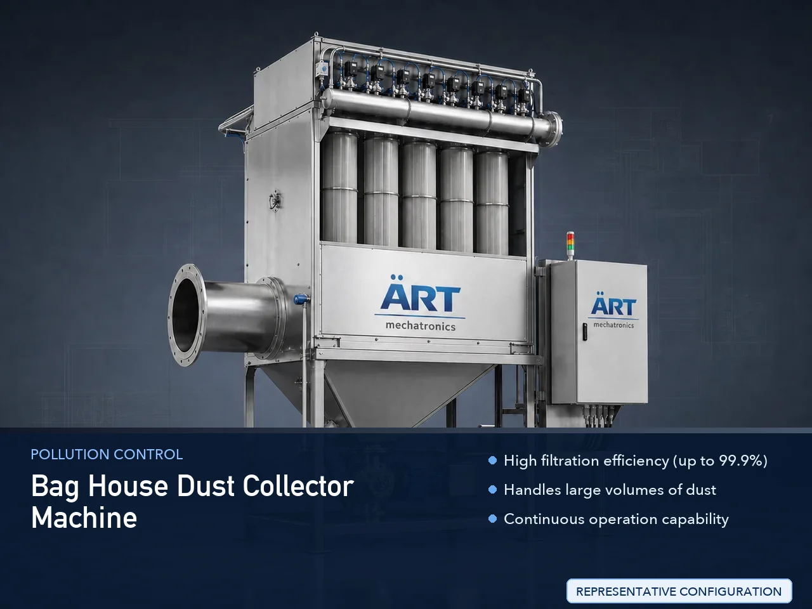

Bag House Dust Collector Machine (Bag Filter Dust Collection System for Industrial Air Pollution Control)
A Bag House Dust Collector Machine, also known as a Bag Filter Dust Collector, is a highly efficient industrial air pollution control system designed to remove dust, fumes, and particulate matter from industrial processes using fabric filter bags.

About the Bag House Dust Collector Machine
It is one of the most widely used and effective dust collection technologies in industries such as cement, steel, foundries, pharmaceuticals, food processing, chemicals, power plants, and construction materials, where large volumes of dust are generated.
ART Mechatronics offers high-performance bag house dust collectors, engineered for maximum filtration efficiency, continuous operation, and compliance with environmental standards.
One machine, many names
Buyers search for this equipment under many terms — we manufacture all of them:
Working Principle of Bag House Dust Collector
Dust is generated from:
Dust-filled air enters the bag house through:
Air passes through fabric filter bags where:
Ensures extremely high filtration efficiency
Accumulated dust is removed using:
Keeps filter bags clean and efficient
Dust falls into:
Filtered air is released safely into the atmosphere.
Types of Bag House Dust Collectors
Industries Using Bag House Dust Collectors
🏗️ Cement & Construction Industry
- Cement plants
- Fly ash handling
- Stone crushing
🏭 Steel & Metal Industry
- Foundries
- Casting units
- Shot blasting
🍃 Food & Agro Industry
- Flour mills
- Spices
- Grain processing
💊 Pharma & Chemical Industry
- Powder handling
- Chemical processing
⚗️ Power Plants & Boilers
- Coal handling
- Ash collection
♻️ Recycling & Plastic Industry
- Granules and pellets
Features & Advantages
✔ High filtration efficiency (up to 99.9%) ✔ Handles large volumes of dust ✔ Continuous operation capability ✔ Automatic cleaning (pulse jet system) ✔ Low maintenance and long life ✔ Suitable for high-temperature applications ✔ Compliance with pollution control norms
Technical Highlights
- Airflow Capacity: High CFM systems
- Filter Type: Fabric Filter Bags
- Cleaning System: Pulse Jet / Reverse Air
- Dust Discharge: Hopper + Rotary Valve
- Construction: MS / SS
- Automation: PLC-based control (optional)
Turnkey Bag House Solutions
ART Mechatronics provides:
- Complete system design & engineering
- Ducting layout planning
- Equipment manufacturing
- Installation & commissioning
- Automation integration
- After-sales service & AMC
Why Choose Art Mechatronics
- Expertise in heavy-duty dust collection systems
- Customized solutions for all industries
- High-efficiency filtration technology
- Durable and robust industrial design
- Proven performance across large plants
Applications
- Cement Plants
- Steel & Foundry Units
- Food Processing Plants
- Chemical & Pharma Units
- Power Plants
- Construction Material Plants
Industries that use the Bag House Dust Collector Machine
Get pricing & specs for the Bag House Dust Collector Machine
Share the product, target capacity, current process and plant location. These details help our engineers discuss the right machine or line configuration.
One partner, from design to start-up
ART Mechatronics designs, manufactures, installs and commissions your Bag House Dust Collector Machine solution with regional presence in India, UAE and Thailand.